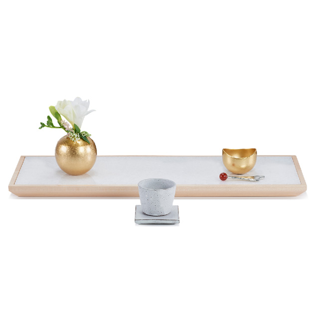
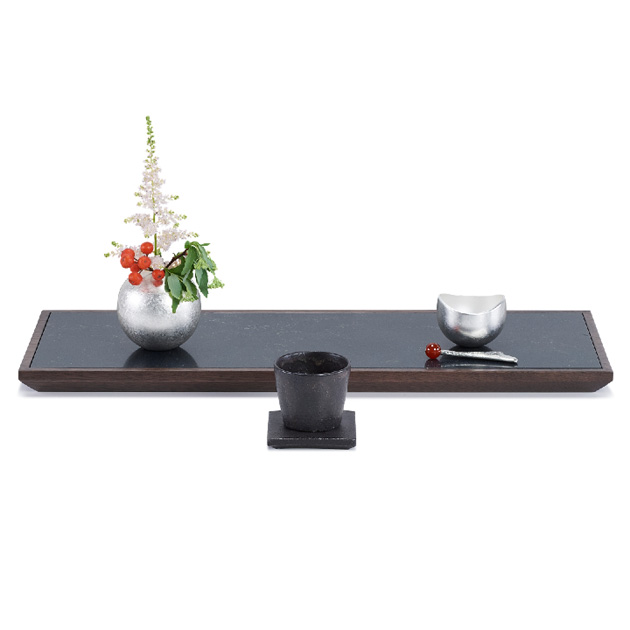
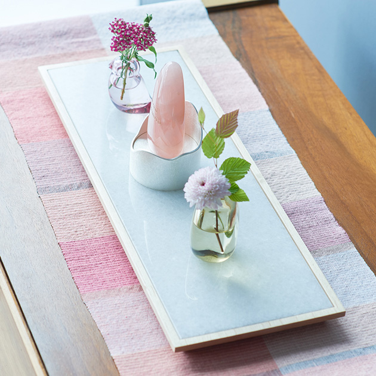
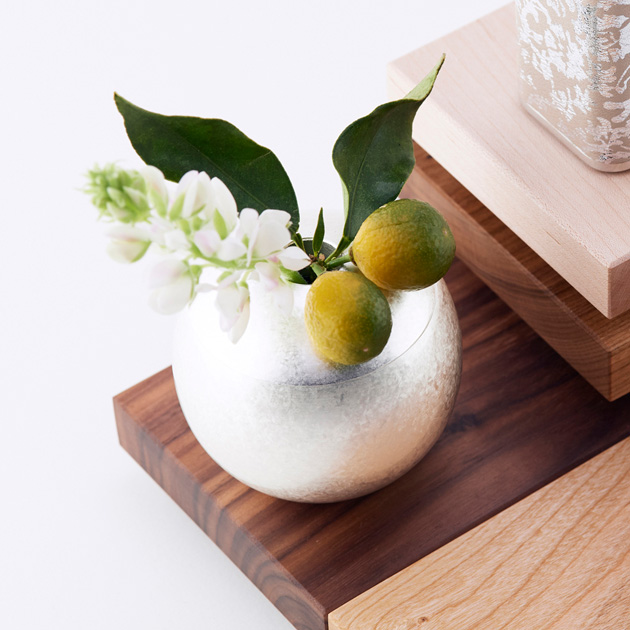
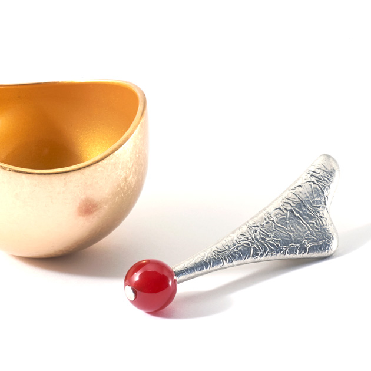
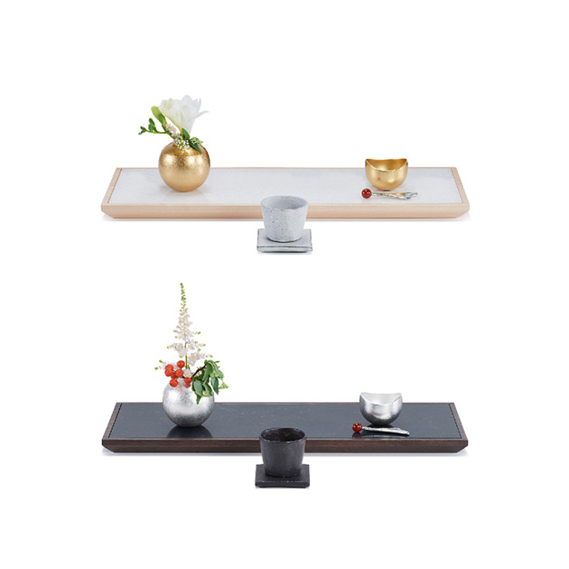
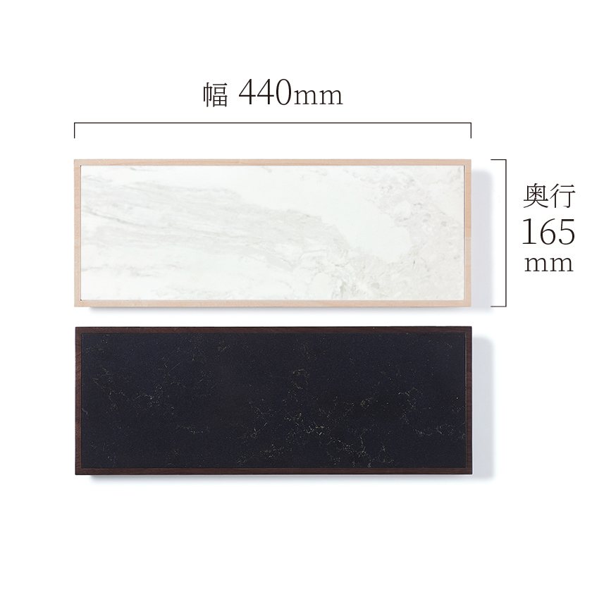

Do
間、個人化への導線
暮らしに間を置く道具を知り、買える場所へ行く。
Home › Do › 祈りの道具屋 まなか › mirror 想セット


color: mirror(ホワイト)× ゴールドトーンセット / mirror(ブラック)× シルバートーンセット
-
mirror(ホワイト)× ゴールドトーンセット
¥91,300 税込
-
mirror(ブラック)× シルバートーンセット
¥91,300 税込
商品説明
『mirror』に個性ある仏具を
あなたの思うように、大切なあの人を自由に表現するための供養台『mirror』と、個性ある仏具のコーディネートセットをご用意しました。大切なあの人との新しい関係がはじまるにふさわしい祈りの空間になりますように、と、想いを込めました。
＊本セットの商品内容
(1)mirror×1
(2)月の花立 ×1
(3)羽の琳 ×1
(4)陶器カップ ×1
(5)タイルプレート ×1

あなたらしく、
向き合えるように
しきたりに囚われず、あなたらしく、ご供養との心の距離を近づけてほしい。そんな想いから作られた供養台です。あの人を感じられるものなら、何を置いても構いません。あなたの思うように、「あの人」を『mirror』の上で表現してください。磨き上げられた石に「あの人」が映り込み、鏡の中で目が合うように、あなたとあの人が向き合う。そんな対話に近い向き合いが、あの人を感じられる特別な聖域を作り上げることでしょう。

いつもそばにある
お月さまのように
『月の花立』
お星さまになったあの人にそっと寄り添うお月さまのように、まあるく輝くその姿を、お位牌にそっと寄り添う花立にしました。大切なあの人とあなたの新しい関係がはじまる場所を、いつもそばにいるお月さまのように照らしてくれることでしょう。毎日使うものとして、使いやすさも考慮されています。

2羽の水鳥が
さえずるハーモニー
『羽の琳』
お星さまになったあの人に寄り添うつがいの水鳥。その2羽でさえずるハーモニーをおりんにしました。美しい音色で大切なあの人に語りかければ、毎日の祈りの時間がより豊かになっていくことでしょう。

『mirror』にあわせて
2つのカラー
『mirror』のホワイトにゴールドの仏具とホワイトの陶器を合わせたセットと、『mirror』のブラックにシルバーの仏具とブラックの陶器を合わせたセットの2種類をご用意しています。あなたらしい祈りの空間に合うカラーをお選びください。

商品仕様
サイズ
(1)mirror
幅44cm×奥行16.5cm×高さ2cm
重さ:約2kg
(2)月の花立
直径：6.4cm×高さ6.1cm×深さ5.5cm
口の直径：1.4cm
(3)羽の琳
直径5.3cm×高さ3.8cm (本体)
(4)カップ
直径5.3cm×高さ4.3cm
(5)タイルプレート
幅6.2cm×奥行6.2cm×高さ1cm
素材
(1)mirror
本体：ビコストーン
木枠：
ホワイト×オフホワイト：メープル
ブラック×ブラウン：ウォールナット
(2)月の花立：真鍮
(3)羽の琳：シルジン青銅、錫・瑪瑙（りん棒）
(4) カップ、 (5) タイルプレート：陶器
生産地
(1)mirror：岐阜県
(2)月の花立、(3)羽の琳：富山県高岡市
(4) カップ、 (5) タイルプレート：埼玉県越谷市
カラー
mirror(ホワイト×オフホワイト)× ゴールドトーンセット
mirror(ブラック×ブラウン)× シルバートーンセット